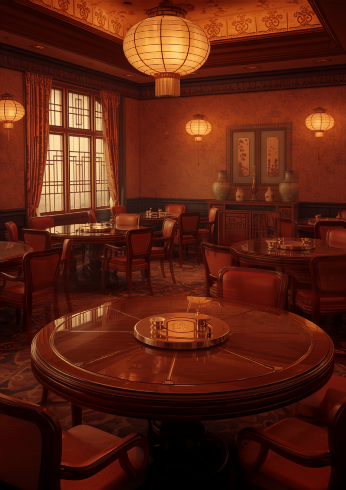
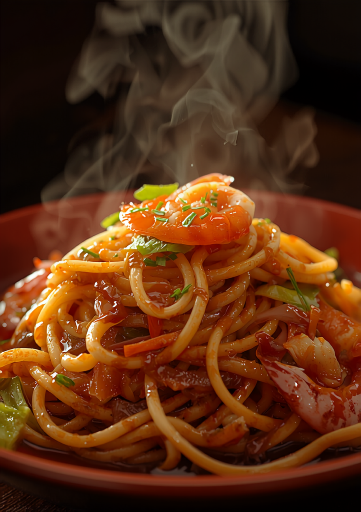

「この値段でいいの？」と驚くほどのコスパ。熟練の技で一気に炒め上げる、地元に愛される町中華です。
日替わり定食から名物の皿うどんまで。回転円卓を囲むように、みんなで少しずつ。
店内に入ると、まず目に飛び込む「宴会三国志」の垂れ幕。嫌でも気分があがります。昔から、2階で懇親会。低予算でたっぷり飲んで食べられると、地元で使われてきました。
送迎バスもご用意。大人数の宴会も、お任せください。


市販の麺よりもしっかりした歯ごたえで、パリッと香ばしく、最後まで美味しい。具材との相性も良く、満足度の高い一皿です。安くて、早くて、何より美味しい。
春華苑さんでパリパリ皿うどんを。市販の麺よりもしっかりした歯ごたえで、パリッと香ばしく、最後まで美味しくいただけました。満足度の高い一皿でした。
この値段でいいの？と驚くほどリーズナブルなのに、味は本格派。日替わり定食は、メイン料理にスープ、副菜まで付いて満足度200%！どのお料理もハズレなし。
老舗で人気店。昔、2階で懇親会とか低予算でたっぷり飲んで食べられて使ってました。優しい感じの女性店長さんもグッドポイント。